from scipy import statsPython
For module 2, the relevant Python functions are the probability distributions functions. The list of probability distributions is extensive. We will only scratch the surface in TECH3 and consider some very commonly used distributions. An important distinction is between discrete and continuous distributions.
A discrete distribution describes outcomes that take on distinct, countable values. Typical examples include the number of successes in a series of trials or the number of arrivals in a queue. These distributions are characterized by probability mass functions (PMFs), which assign a probability to each possible outcome.
A continuous distribution, on the other hand, models outcomes that can take on any value within an interval of real numbers. Instead of individual probabilities, they use probability density functions (PDFs), where probabilities are obtained by integrating over an interval. Examples include measurements such as time, distance, prices, or temperature.
A probability mass function (PMF) is used for discrete distributions and gives the probability of each specific outcome. In contrast, a probability density function (PDF) is used for continuous distributions and does not give probabilities directly; instead, probabilities are obtained by integrating the density over an interval. Both types of distributions share two related functions: the cumulative distribution function (CDF), which gives the probability that a random variable is less than or equal to a given value, and the percentage point (quantile) function, which is the inverse of the CDF and returns the value corresponding to a specified cumulative probability.
| Function | Discrete distribution | Continuous distribution |
|---|---|---|
| Probability mass / density | PMF: \(p(x) = P(X = x)\), 0p(x) | PDF: \(f(x) \ge 0\), \(P(a \le X \le b) = \int_a^b f(x)\,dx\) |
| Cumulative distribution function (CDF) | \(F(x) = P(X \le x) = \sum_{t \le x} p(t)\) | \(F(x) = P(X \le x) = \int_{-\infty}^{x} f(t)\,dt\) |
| Quantile / Percentage point function | \(Q(p) = \inf\{ x : F(x) \ge p\}\) | \(Q(p) = \inf\{x : F(x) \ge p\}\) |
In Python we find relevant function for (almost) all distributions you can think of in the library (complete list here).
Below is a table of distributions, classified as either discrete or contiuous, and the name of the respective scipy.stats distribution name or class.
| Type | Distribution | scipy.stats name |
|---|---|---|
| Continuous | Normal | norm |
| Uniform | uniform |
|
| Exponential | expon |
|
| Chi-squared | chi2 |
|
| Gamma | gamma |
|
| Discrete | Bernoulli | bernoulli |
| Binomial | binom |
|
| Poisson | poisson |
|
| Geometric | geom |
|
| Negative binomial | nbinom |
Continuous: Uniform distribution
The uniform distribution is characterized by having a constant density and being defined one a closed interval. That is, if \(X\sim U(a,b)\), the density is \[f(x) = \frac{1}{b-a},\quad a\le x\le b,\, a<b.\] The corresponding cumulative distribution function is \[ F(X) = \int_a^x f(k)\, dk = \int_a^x \frac{1}{b-a} dk = \frac{k}{b-a}\bigg|_a^x = \frac{x-a}{b-a},\quad a\le x \le b. \] The CDF of a uniform distribution function is the inverse of \(F(x)\), which we can actually express explicitly. We need to solve \(p=F(x)\) for x. \[ p= F(x) = \frac{x-a}{b-a}\quad \Leftrightarrow \quad x = a+(b-a)p=Q(p), \quad 0\le p\le1. \] Hence, the quantile function of a uniform distribution is linear in \(p\).
We plot the three functions for a U(0,1) distribution, i.e. \(a=0\) and \(b=1\). This would mean: \(f(x) = 1/(1-0)=1\), \(F(x) = x\) and \(Q(p)=p\).
import matplotlib.pyplot as plt
import numpy as np
x = np.linspace(0, 1, 2000)
ppts = np.linspace(0, 1, 2000)
pdf = stats.uniform.pdf(x)
cdf = stats.uniform.cdf(x)
ppf = stats.uniform.ppf(ppts)
# Plot density
plt.plot(x,pdf)
plt.ylabel("Uniform(0,1) density")
plt.xlabel("x")
plt.ylabel("f(x)")
plt.show()
# Plot cumulative distribution function
plt.plot(x,cdf)
plt.xlabel("x")
plt.ylabel("P(X ≤ x)")
plt.ylabel("Uniform(0,1) CDF")
plt.show()
# Plot percentage point function (quantile function):
plt.plot(ppts,ppf)
plt.xlabel("p")
plt.ylabel("Q(p)")
plt.ylabel("Uniform(0,1) quantile function (PPF)")
plt.show()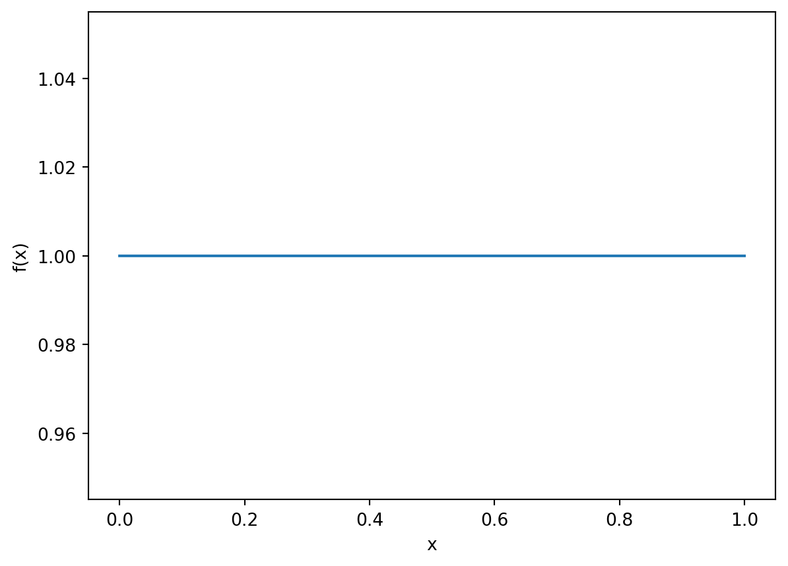

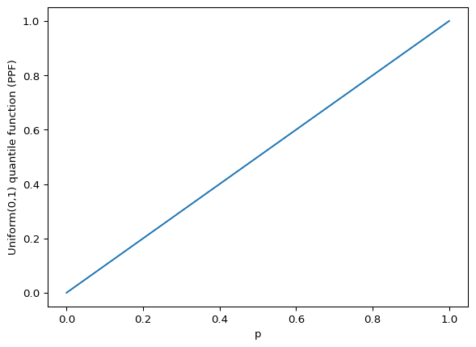
Continuous: Normal distribution
The normal density function is given by \[ f(x) = \frac{1}{\sqrt{2\pi}\,\sigma} \exp\!\left( -\frac{(x - \mu)^2}{2\sigma^2} \right),\quad x\in\mathcal R,\, \mu\in\mathcal R,\, \sigma >0. \] Here \(\mu\) is the expected value of \(X\) and \(\sigma^2\) is the variance. The CDF is then given by the integral: \[ F(x)=P(X\le x) = \frac{1}{\sqrt{2\pi}\,\sigma} \int_{-\infty}^{x} \exp\!\left( -\frac{(t-\mu)^2}{2\sigma^2} \right)\, dt. \] The quantile function is then the inverse of \(F\), i.e. \[ Q(p) = \inf\{ x \in \mathbb{R} : F(x) \ge p \}. \] While the CDF tells you how likely \(X\) is to be below a value, the quantile function tells you which value of \(X\) corresponds to a chosen probability.
Below we plot the three function for a standard normal distribution. That is, a normal distribution with expectation \(\mu=0\) and variance \(\sigma^2=1\).
ppts = np.linspace(0,1,1000)
x = np.linspace(-5, 5, 2000)
pdf = stats.norm.pdf(x)
cdf = stats.norm.cdf(x)
ppf = stats.norm.ppf(ppts)
# Plot density
plt.plot(x, pdf)
plt.title("Standard Normal density")
plt.xlabel("x")
plt.ylabel("f(x)")
plt.show()
# Plot cumulative distribution function
plt.plot(x, cdf)
plt.title("Standard Normal CDF")
plt.xlabel("x")
plt.ylabel("P(X ≤ x)")
plt.show()
# Plot percentage point function (quantile function):
plt.plot(ppts, ppf)
plt.title("Standard Normal quantile function (PPF)")
plt.xlabel("p")
plt.ylabel("Q(p)")
plt.show()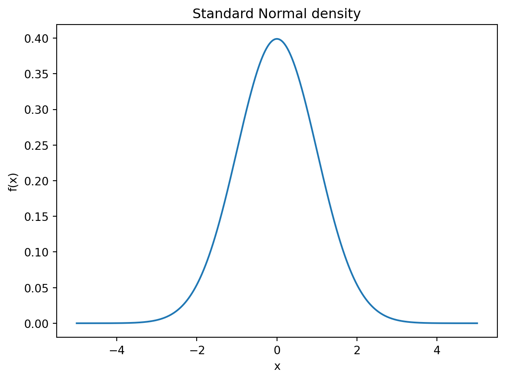
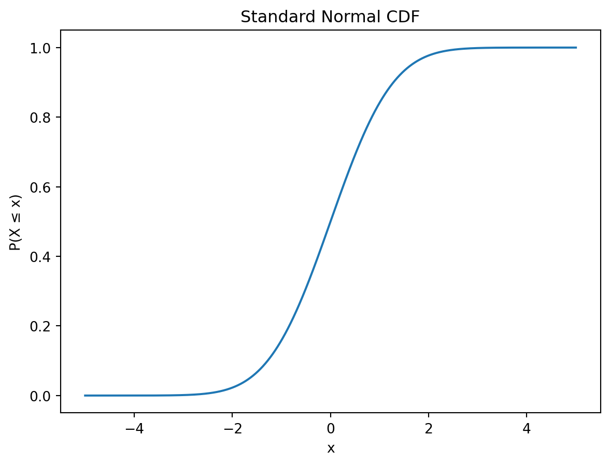
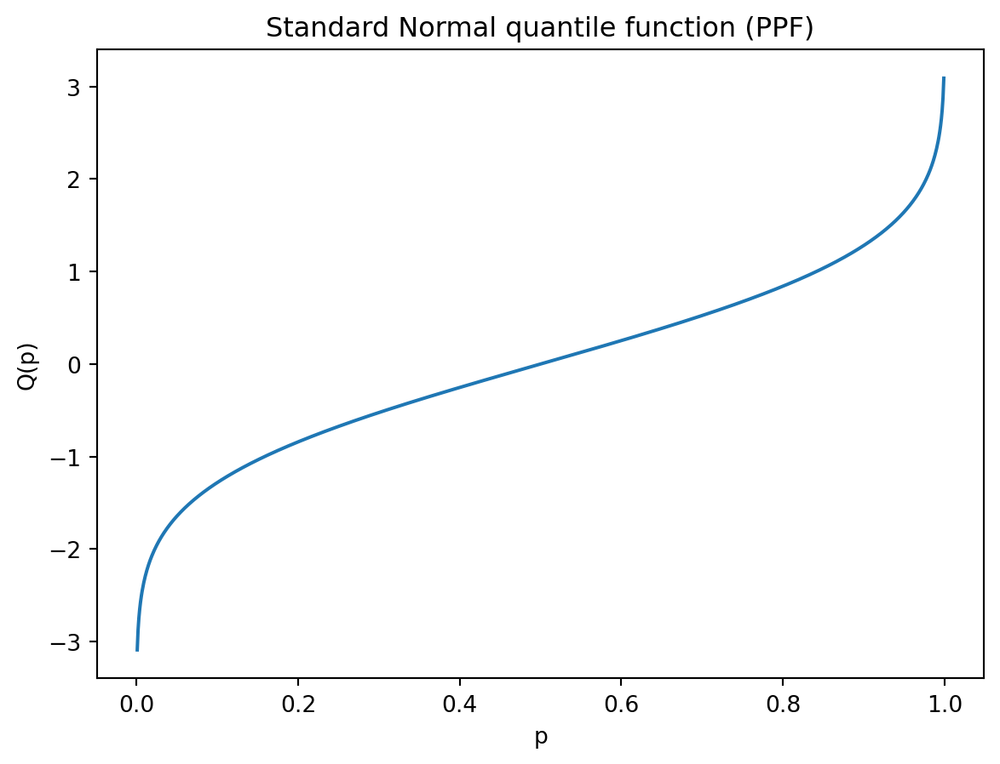
Discrete: Binomial distribution
The PMF of a Possion distributed variable X is given by \[ p(x)= P(X = x) = \binom{n}{x} p^{x} (1-p)^{\,n-x}, \qquad x = 0,1,\ldots,n, \] where \(\binom{n}{k}\) is the binomial coefficient, defined by \[ \binom{n}{k} = \frac{n!}{k!\,(n-k)!}. \] Hence, the cumulative distribution function is
\[ F(x) = P(X\le x)=\sum_{k=0}^{\lfloor x \rfloor} \binom{n}{k} p^{k} (1-p)^{\,n-k}, \quad 0\le x\le n. \] Note the use of \(\lfloor x \rfloor\), which means rounding \(x\) to nearest integer. This allows us to define the CDF for a contious \(x\), even though the PMF only is defined for integer values. This makes the CDF a step function.
There is no closed form expression for the quantile function, but we can compute it using Python. In the code below, we calculate the three functions and plot them, for a binomial distribution with number of trials \(n=20\) and probability of success \(p=0.3\).
import numpy as np
import matplotlib.pyplot as plt
from scipy import stats
# Parameters for the binomial distribution
n = 20 # number of trials
p = 0.3 # success probability
# x-values must be integers from 0 to n
x = np.arange(0, n+1)
# Probability mass, cumulative, and quantile values
pmf = stats.binom.pmf(x, n, p)
cdf = stats.binom.cdf(x, n, p)
# For the quantile (percentage point function), we use ppts in [0,1]
ppts = np.linspace(0, 1, 1000)
ppf = stats.binom.ppf(ppts, n, p)
# Plot probability mass function
plt.bar(x, pmf)
plt.title("Binomial(n=20,p=0.3) PMF")
plt.xlabel("x")
plt.ylabel("p(x)")
plt.show()
# Plot cumulative distribution function
plt.step(x, cdf, where='post')
plt.title("Binomial(n=20,p=0.3) CDF")
plt.xlabel("x")
plt.ylabel("P(X ≤ x)")
plt.show()
# Plot quantile (percentage point) function
plt.plot(ppts, ppf)
plt.title("Binomial(n=20,p=0.3) Quantile Function (PPF)")
plt.xlabel("p")
plt.ylabel("Q(p)")
plt.show()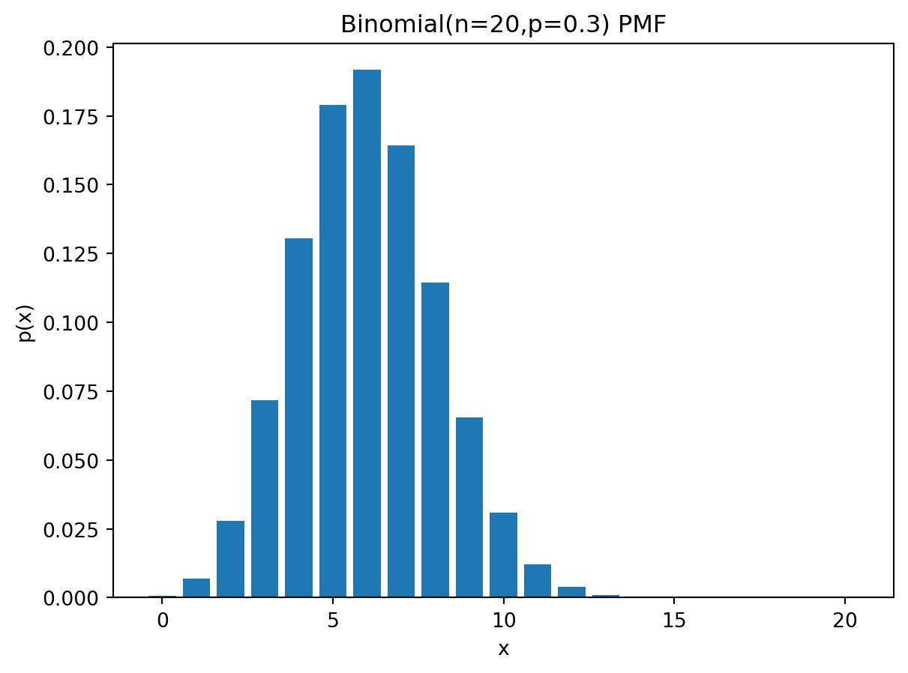
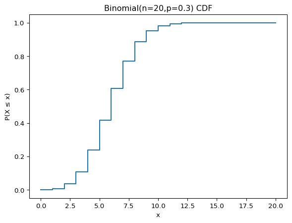
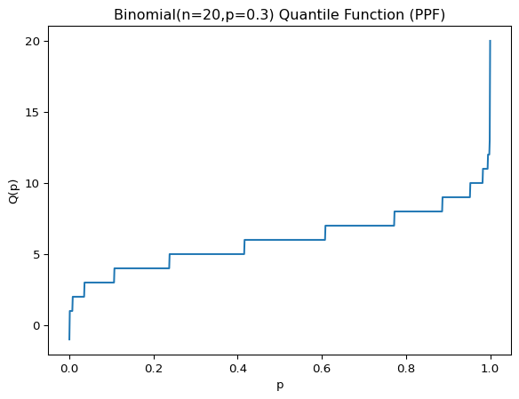
Discrete: Poisson distribution
The PMF of a Possion distributed variable X is given by \[ p(x)=P(X = x) = \frac{\lambda^{x} e^{-\lambda}}{x!}, \quad x = 0,1,2,\ldots, \] where parameter \(\lambda\) is both the expectation and variance of \(X\) (this is a characteristic of the Poisson distribution). The CDF is given by: \[F(x) = P(X\le x) = \sum_{k=0}^{\lfloor x \rfloor}\frac{\lambda^{k} e^{-\lambda}}{k!}, \quad x\ge0.\] Note also here that we use a rounding down for the \(x\) in the summation to define it for a continuous non-negative \(x\), even though \(X\) is discrete.
Also for the Poisson distribution, the quantile there is also no closed form expression.
We repeat the exercise of plotting the three functions, this time for Poisson distribution with \(\lambda = 4\).
# Parameter for the Poisson distribution
lam = 4 # intensity parameter λ
# Reasonable x-range (e.g., up to λ + 4√λ)
x_max = int(lam + 4 * np.sqrt(lam))
x = np.arange(0, x_max + 1)
# Probability mass, cumulative distribution, and quantile values
pmf = stats.poisson.pmf(x, lam)
cdf = stats.poisson.cdf(x, lam)
# For the quantile (percentage point function)
ppts = np.linspace(0, 1, 1000)
ppf = stats.poisson.ppf(ppts, lam)
# Plot PMF
plt.bar(x, pmf)
plt.title("Poisson(4) PMF")
plt.xlabel("x")
plt.ylabel("p(x)")
plt.show()
# Plot CDF
plt.step(x, cdf, where='post')
plt.title("Poisson(4) CDF")
plt.xlabel("x")
plt.ylabel("P(X ≤ x)")
plt.show()
# Plot quantile (PPF) function
plt.plot(ppts, ppf)
plt.title("Poisson(4) Quantile Function (PPF)")
plt.xlabel("p")
plt.ylabel("Q(p)")
plt.show()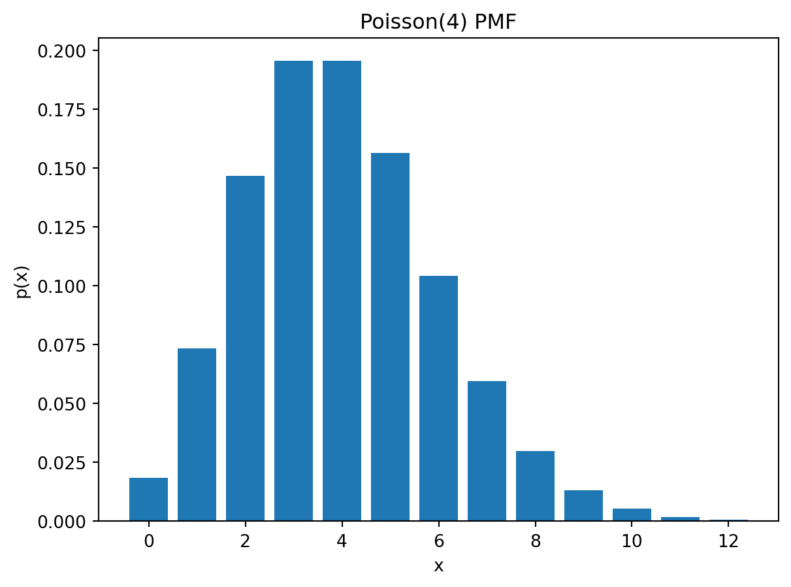
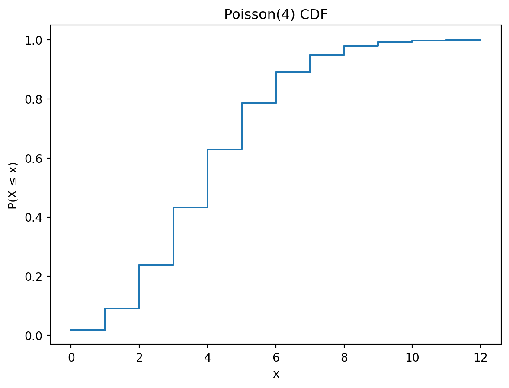
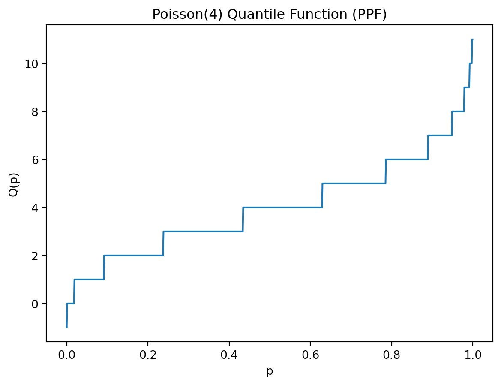